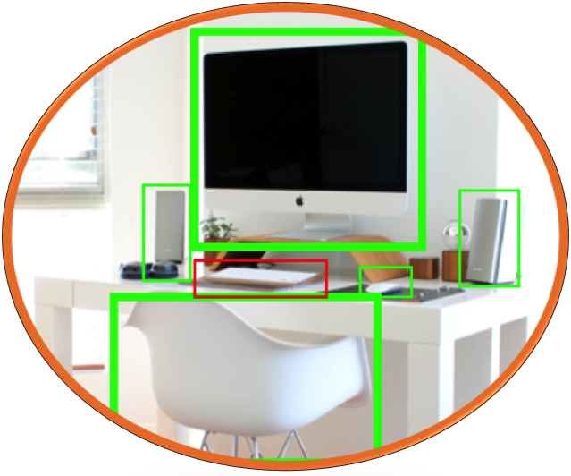

About Me
A computer vision expert with industry experience and a Ph.D. specializing in object detection with context and more. I graduated from the Computer Science Department at Ben Gurion University (BGU), as a member of the Interdisciplinary Computational Vision Laboratory (iCVL) led by Prof. Ohad Ben-Shahar.
My main research interests include the detection of objects in 2D/3D with and without context, pose estimation, point clouds, and so on.
Publications
Please check out the
research tab.
Contact Information
Contact me at ehud dot barnea at gmail.
Teaching (TA)
- 2014 - 2017:
- Spring 2014:
- Fall 2014:
- Spring 2013:
- Fall 2013:
- Spring 2012:
- Spring 2011:
Research
Understanding the utility of context for object detection
The detection of objects is mostly based on their local appearance without an explicit reasoning about their context. Seeking to exploit this meaningful source of information, many works have shown the ability of the context to predict object locations and improve their detection. However, in most cases (or object categories) the presented improvement was rather modest, leaving a gap between actual improvement and the expected one. In this work, we seek to explain why this is so and shed more light on the utility of context for object detection. Specifically, we show the best possible improvement that can be achieved by the inclusion of context, showing exactly when context can and cannot improve. With further analysis we provide a reason for the gap between achieved and expected improvement based on the inability of context to handle false detections due to localization errors, which are often abundant in different detectors and object categories.
Barnea E. and Ben-Shahar O., Exploring the Bounds of the Utility of Context for Object Detection, CVPR 2019 (
paper).
Global shape statistics for curve completion
Visual curve completion is the problem of completing the missing parts of a curve, with applications ranging from image inpainting to the design of roller coasters. Most completion methods to date seek visually appealing curves and indeed are able to generate smooth and curvy curves. However, these models do not seek the correct reconstruction for an occluded image curve and may provide ill fitting completions. In this work we present a simple model that seeks to correctly reconstruct the underlying structure by employing the global shape statistics of natural curves. The presented model is straightforward to compute and provides better reconstructions and visually appealing curves.
Barnea E. and Ben-Shahar O., Curve Reconstruction via the Global Statistics of Natural Curves, CVPR 2018 (
paper).
Contextual object detection
The detection of objects is driven mostly by examining their appearance and may fail when their appearance is lacking, as often happens when objects are occluded or far away. To overcome such limitations we combine standard detectors with the ability to reason about the spatial relations between objects, which can be highly predictive in many cases. In this line of research we study the high order relations between different objects with the aim of developing stronger models of context.
Barnea E. and Ben-Shahar O., Contextual Object Detection with a Few Relevant Neighbors, ACCV 2018 (
paper).

3D object detection exploiting symmetry
Knowing the poses of objects before their detection or classification has been shown to improve the results of object detectors. However, a robust and fine estimation of object poses is still challenging. To do just that, we suggest to employ the mirror symmetry of objects, providing a part of the pose information. In our ECCV14 paper we show how the symmetry of objects in 3D can be robustly detected (providing fine but partial pose information) and used to construct a partial pose invariant representation of objects’ shape, allowing state of the art object detection.
Barnea E. and Ben-Shahar O., Depth Based Object Detection from Partial Pose Estimation of Symmetric Objects, ECCV 2014 (
paper).
A fully automatic fruit harvesting robot (cRops)
In the European Union's “cRops” project, we seek to automate the fruit harvesting process with a robot that does everything from the visual detection of fruit to precision picking with specially designed grippers. This robot is a result of collaboration with several research groups. Our research lab (BGU ICVL) was tasked with the visual task of fruit detection, while I developed methods for the 3D detection of fruit and acted as group liaison. For more information regarding the project, visit the
formal website.
Barnea E., Mairon R., and Ben-Shahar O., Colour-agnostic shape-based 3D fruit detection for crop harvesting robots, Biosystems Engineering 2016 (Q1 journal) (
paper).
Kapach K., Barnea E. *, Mairon R. *, Yael E., and Ben-Shahar O., Computer vision for fruit harvesting robots – state of the art and challenges ahead, IJCVR 2012 (
paper).
Personal
Anki Furigana Hint
For those learning Japanese using Anki SRS, should you wish to configure a hint field to add furigana to the currently visible kanji, check out this page.
Group Seminar
Our group holds weekly seminars on the subject of computational vision and cognition. Most of our speakers consist of graduate students and professors presenting their latest research, and sometimes general subjects are displayed as well. If you have interesting work to show, or you wish to be added to the newsletter, please contact me.
Upcoming Lectures:
baaaa
<- Back to personal
Configuring An Anki Hint To Display Furigana
An Anki hint is like a link that adds information to a card after it is clicked. This feature is pretty comfortable, though it does not allow you to make changes to the data that is already displayed (also, it doesn't allow to do something like {{hint::furigana::Japanese}} which forces us to include a hiragana field. See sad-face example below). However, as a Japanese learner I did want to change the data. When I read read text with kanji and furigana on top I always seem to disregard the kanji and read the furigana first. To solve this I went on and displayed only the kanji and added a hint to display the hiragana reading, however, this isn't elegant, so what I would like to have displayed is the furigana above the kanji. This appears to be possible using links (see smiley-face example at the bottom of the page).
The current option using a hint field. Translation by EDICT.
Since Anki allows links to be added to cards we can create a link to resemble a hint. It seams text cannot be altered, so we configure this link to have two actions upon click, to hide the visible text (kanji only) and then to display the hidden text (kanji with furigana). To do so with a deck containing two fields named "English" and "Japanese" (where "Japanese" contains text like "木[こ] 漏[も]れ 日[び]"), you may simply copy the front and back templates below:
Front template:
<span id="before" style="font-family: Mincho; font-size: 50px; ">
{{kanji::Japanese}}
<br>
<a href="#"
onclick="document.getElementById('after').style.display='block';document.getElementById('before').style.display='none';return false;">
Kana</a>
</span>
<span id="after" style="font-family: Mincho; font-size: 50px; display: none">
{{furigana::Japanese}}
</span>
Back template:
<span style="font-family: Mincho; font-size: 50px; ">
{{furigana::Japanese}}
<hr id=answer>
{{English}}
</span>
As you can see, the front template is made of two "span" tags, a span tag (with id="before"), including the link (or hint), and another span tag (with id="after"). The "after" tag has a property "display: none", which means it starts off as hidden (while the "before" one does not have this property and is visible). The action of the link (specified in the onclick field) does two things, it sets the display value of the "after" tag to "block" (rendering it visible) and it sets the value of the "before" tag to "none" (rendering it hidden). The link disappears as well (as it is inside the "after" tag) and we are left only with the kanji and furigana on top. The back template had to be updated as well, so that it won't show the link and all the mess in the front template.
If you know of a better way to do so, please let me know.
The hint adds furigana to the kanji. Translation by EDICT.